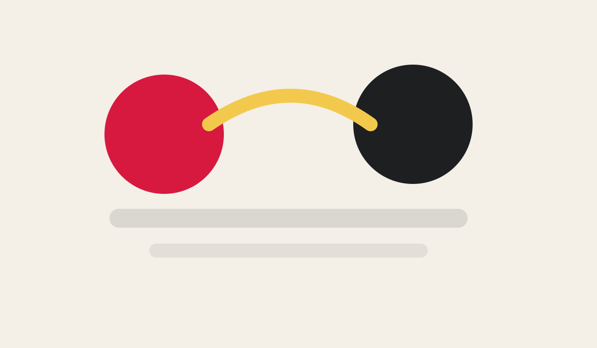
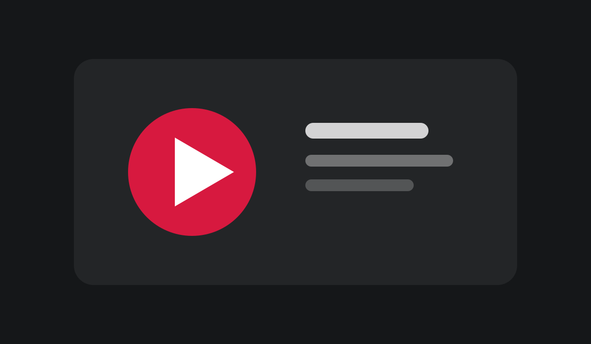
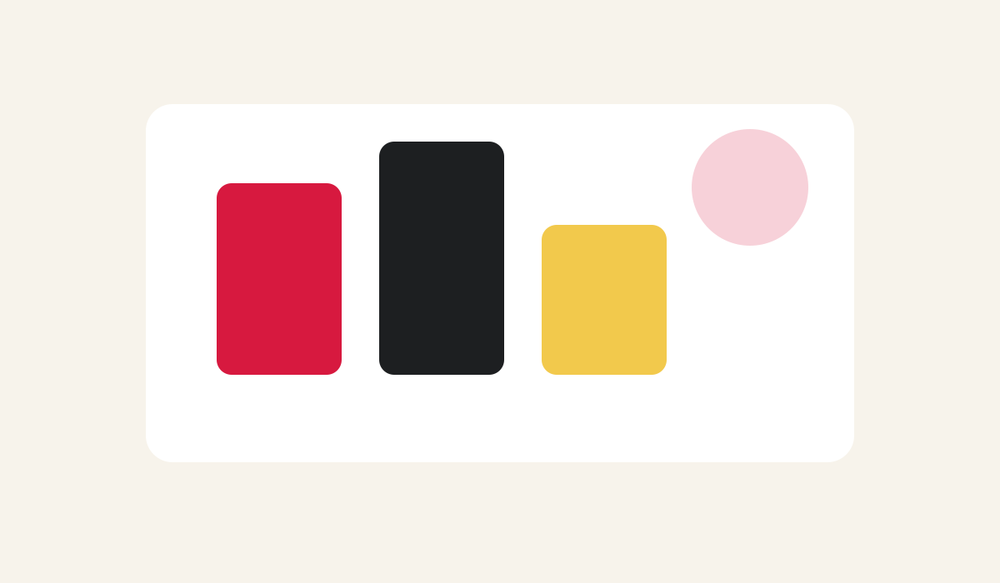
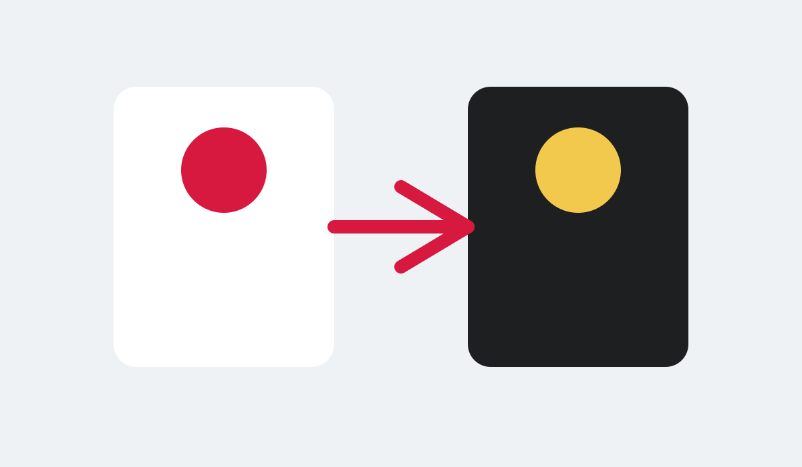

Hitta färger som passar ihop
Låt AI analysera ditt företag eller din logo och visa flera färgpaletter sida vid sida.
Öppna guiden →Korta guider, konkreta företagsexempel och praktiska idéer för dig som vill börja använda AI utan att göra det onödigt krångligt.
Svara på några korta frågor eller skriv vad du behöver hjälp med. Motorn plockar fram en liten lista som passar dina val.
Du behöver inte följa någon kursordning. Börja där ditt behov finns idag.

Sök eller välj några alternativ och få en kort rekommenderad lista.

Färger, bildstil, AI-bilder och enkel video.

Förstå idén, skriv instruktionerna och prova i ett verktyg.

Korta företagscase som går att översätta till den egna vardagen.
Varje guide är gjord för att kunna fungera fristående. Ta den som känns relevant just nu.
Låt AI analysera ditt företag eller din logo och visa flera färgpaletter sida vid sida.
Öppna guiden →Se skillnaden mellan en vanlig AI-chatt och en återanvändbar assistent med tydliga instruktioner.
Öppna guiden →Har du några bilder färdiga kan du sätta ihop dem med kort text, övergångar och musik.
Öppna guiden →Börja med vad agenten ska göra. Fortsätt sedan med input, kunskap, regler och hur resultatet ska se ut.
Korta case från AI Boost-samarbeten. Fokus ligger på vad ett annat litet företag provade – och vilken idé du själv kan ta med dig.
Återanvänd material, jämför dokument, förstå Excel-data och skriv utkast i företagets egen röst.
Välj till exempel Microsoft eller Google, visuellt material, inspiration, data eller AI-agenter – och hur mycket tid du har.